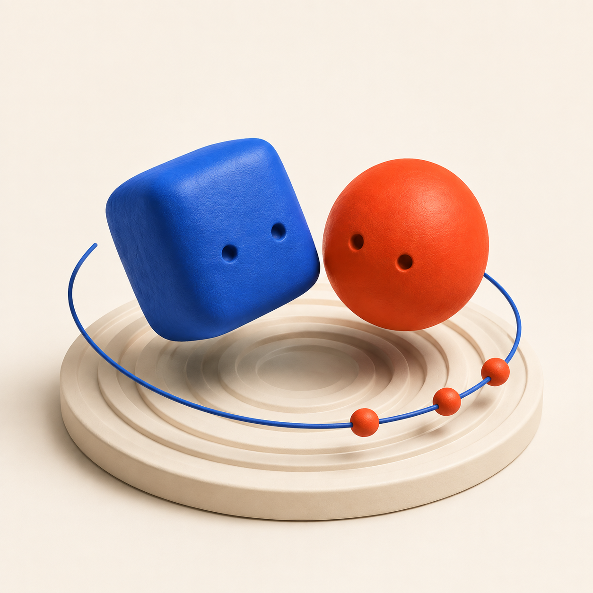

小さなリズムの挑戦
同時打ちから、左右で違う拍へ。1回8小節のレッスンを楽しめます。
右と左、つられず叩ける？
聴いて、叩いて、思わずもう一回。
iOS 17以降。最初の3レッスンは無料です。

同時打ちから、左右で違う拍へ。1回8小節のレッスンを楽しめます。
お手本を聴いて、片手ずつ、ゆっくり。難しい一拍も確かめられます。
無料の3レッスンに加え、4〜12を解放。月額料金と広告はありません。購入時の価格はApp Storeでご確認ください。
青い四角は左手、朱色の丸は右手。光がラインに重なったら、その下のパッドを叩きます。最初は端末を机に置き、お手本を聴いてみてください。
まず内蔵スピーカーでお試しください。設定の「判定タイミング」で調整できます。合っているのに「遅い」と出るときは＋方向、「早い」と出るときは−方向に調整します。Bluetoothでは音の遅れが変わる場合があります。
購入時と同じApple Accountを使い、設定または解放画面の「購入を復元」を選んでください。購入・復元には通信が必要です。購入後のプレイにアプリ独自のアカウントは不要です。
設定の「プレイ記録をリセット」でベストスコアとクリア記録を削除できます。購入履歴は削除されません。
お問い合わせ：shuuuya0616@gmail.com
端末名、iOSのバージョン、レッスン番号、発生した操作を添えてください。カード番号やパスワードは送らないでください。